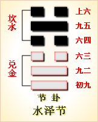

高岛易断 - 21火雷噬嗑
高岛易断 21 火雷噬嗑
“噬
［89］
”，啮也，“嗑
［90］
”，合也，啮而合之也。卦全象颐，以初、上二刚为两唇，以二、三、四、五四阴为齿，上下龂腭，有噬之象。以四爻一刚，梗于其间，如物之在口，初上二刚，以四为梗，遂致上下不得合。下唇动，上唇止，必噬乎四之梗，梗消而两唇乃合，谓之《噬嗑》。卦承《观》来，《序卦》曰：“可观而后有合，故受之以《噬嗑》，嗑，合也。”既有可观，后必来合，《噬嗑》所以次《观》也。
噬嗑：亨，利用狱。
▲ 篆书噬
▲ 篆书嗑
《杂卦》曰：“噬嗑，食也。”凡食下咽则口合，有物梗之则口不合，不合则不通，合则亨通矣，故曰“噬嗑，亨”。由是而推之，在家庭则有谗邪以梗之，在朝廷则奸佞以梗之，在道路则有强暴以梗之。一如物之在口，有梗则不通也，欲期其通，当先治其梗，治梗者，“利用狱”。治狱宜刚，象取初上两刚，用之者，则在五爻也。“狱”，囚也，外卦《离》体，外实中虚，有狱象焉。内卦《震》，《震》威也，外卦《离》，《离》明也，威而且明，有治狱之才焉，故曰“利”。如是而噬嗑济矣。《彖传》曰：颐中有物曰噬嗑，噬嗑而亨。刚柔分，动而明，雷电合而章。柔得中而上行，虽不当位，利用狱也。
颐本合也，因中有物梗，则上下不合，卦体初上两刚在外，二、三、五三柔分列上下，四爻一刚在中，如颐中有物之象，必得初上两刚相交，噬而嗑之，啮去其梗，颐斯合矣。颐合梗去，则亨通也，故曰“噬嗑而亨”。此卦内卦一刚二柔，外卦二刚一柔，是刚柔相分也。雷动也，电明也，“动而明”。雷震而电煽，一时合发，威耀交彰也。“柔得中”，指六五言，以柔居刚，为刚柔得中也。“上行”，谓五居尊位，柔而处阳，位虽不当，而利于用狱。盖用狱过刚则伤猛，过柔则伤宽，刚柔得中，而狱平矣。统言之，物有害于口齿间者，人以噬嗑治之；物有害于造化者，天地以雷电治之；物有害于政治者，先王以刑狱治之。所谓“噬嗑而亨”者，道在此矣。故《噬嗑》一卦，为治天下之大用也。
按：《贲》卦亦有物在颐中之象，然上卦《艮》止，下卦《离》丽，上止下丽而不动，故不能噬物，虽有颐中含物之象，无噬物之义也。
以此卦拟人事，卦象为“颐中有物曰噬嗑”，谓颐因物梗不能合也。推物之所害，不第颐然，物入于耳而耳必不聪，物生于目而目必不明，物入于胸而胸必致病，物入于心则心必致蒙，是物之害在身也。极之父子之间，有物以间之，则父子乖；兄弟之间，有物以间之，则兄弟离；夫妇之间，有物以间之，则夫妇怨；朋友之间，有物以间之，则朋友疏，是物之有害于彝伦也。欲除其害，在治人则用刑狱，在治己则用内讼，其法一也。动为雷，明为电，动以致其决，明以察其几，动与明合，而赏罚彰焉。以位言之，五爻为君，以德言之，五爻为心，心所以称天君也。此卦五爻，以柔居阳，曰“柔得中”，谓心能柔而用刚，则刚柔得中，斯不失严，亦不失宽，而内松之功用全矣。卦名曰《噬嗑》，《彖》辞曰“颐”，皆取象于齿颊间，故六爻中，曰“灭趾”，曰“灭鼻”，曰噬肉，曰“噬胏”，曰“灭耳”，皆取象于人身，是诚为剥肤之灾也。在内则撤去而心身亨，在外则谗邪去而万事亨，所以善其治者，全在天君也。《易》理所赅甚广，为家，为国，为身，在占之者随事取之耳。
以此卦拟国家，朝廷中所最害政者，群僚在位，有一谗佞与立其间，颠倒朝政，惑乱君心，虽有贤能，被其离间，不能协办共事，此国家所以日替也。此卦四爻，一刚在中，间阻上下，即其人也。初上二阳，一上一下，不相会合，二三柔顺无能，五爻以柔居阳，比近于四，未免偏听。雷伏而不动，电匿而无明，治道之不亨，职是之故。《彖》辞所谓“颐中有物”者，其象亦犹是耳。“颐中有物”，治之利用齿，朝中有谗，治之“利用狱”，而主狱者则在五爻之君，相辅而治狱者，则在初上两刚。然以刚克刚，遇刚则折，犹必用二三两柔，调剂其间，斯四刚贴服。在五爻之君，以柔居阳，位虽不当，而能发雷之动，效电之明，雷电交作，治道乃彰。“动而明”则刑无或枉，明而动则罪无轻纵，是以刚柔中，而狱平矣。六爻历言治狱之方，初轻刑而寡过，二乘刚而易服，三“遇毒”而无害，四守贞而获吉，五用中而恤刑。要皆得刚柔之宜，惟上爻酷刑而有凶，是用刚之过也，即足为治狱者戒。就一卦言，九四为颐中之物，即梗法之人，是受狱而待治者也；就六爻言，九四刚直守贞，为治狱之能才也。盖卦象而爻辞，各取其义，玩其占者，毋以辞害意也。
通观此卦，其象取全体象颐，又取上下雷电二象，为治狱之用，雷以抉伏，电以烛奸，动则能断，明则能察，合而施之，刑法昭彰。六五虽不当位，以柔居阳，为治狱之主，专用初上两刚相合为治，刚柔合而间去，间去而狱平。卦旨如此，在六爻则又有各取其义。或以初上两爻无位，为受刑之人，中四爻为用刑之人。就卦体观之，以四爻一刚，为受刑之人，余五爻为用刑之人，然爻辞皆主“利用狱”，未尝有用刑受刑之别也。但两刚不能独噬，必合诸柔而共噬，故诸爻各有所噬，而噬之中，又分其坚柔焉。二“噬肤”，肤柔而易噬，其罪轻；三“噬腊肉”，较肤而稍坚矣，故有“毒”；四“噬乾胏”，胏肉而带骨，较腊肉而益坚矣，“利艰贞”；五“噬乾肉”，乾肉者，言狱之已成也。五为主狱，其所治者，皆刑官之已决者也，五重省之，故“贞厉”。初曰“屦校”，初在下，刚犹微，故刑在足，是薄罚也。上曰“苛校”，上居终，刚已极，故刑在首，则过猛矣。两爻独不言噬，或之所为受刑者，其以此乎？总之六爻用狱，各有次第，得其当，故皆曰“无咎”；“利艰贞”，则曰吉；用其极，则曰“凶”。平则劝之，过则戒之，慎之至也，故《象传》曰“雷电噬嗑，先王以明罚敕法”，言先王明威并用，即刑期无刑之意《易》之言用狱，《噬嗑》与《丰》二卦最详，《丰》田“折狱致刑”，《噬嗑》曰“明罚敕法”，其审决精详，足惩后世爰书之滥。此全卦之义也。
《大象》曰：雷电《噬嗑》，先王以明罚敕法。
《埤雅》曰：电与雷同气，雷从回，电从申，阴阳以回薄而成雷，以申泄而为电，是皆天地之怒气，震发而示威于天下者也，有用刑之象焉。或曰，雷出天气，电出地气，天地气合而雷电作，《噬嗑》即以初上二刚为雷电。先王取其象以治狱，明以象电之光，敕以象雷之震，罚明使民知避，法敕使民知畏，斯罚无枉曲，法无偏私。朝廷之刑罚，一如天延之雷电。天以好生为德，王以恤刑为心，其道一也，其治隆矣。
【占】 问时运：目下正当好运发动，有威仪，有光耀，声名远播上达之象，吉。
○ 问商业：买者卖者，一时会集，有货物旺销之象，吉。
○ 问家宅：天盘地盘皆动，防有火灾，须小心谨慎，可以免祸。
○ 问疾病：是郁热之症，导直透发，或热极作狂，须慎。
○ 问讼事：判决明允。
○ 问天时：有雷雨骤降之象，雨后即霁。
○ 问婚嫁：阴阳一气，定必百年好合，吉。
○ 问行人：即归。
○ 问失物：恐被人吞没。
高岛易断 初九：屦
［91］
校灭趾
［92］
，无咎。
《象传》曰：屦校灭趾，不行也。
《震》为足，初刚居阳在下，象足；初为《震》之下画，亦象屦。“校”刑具，木校也，加校于屦，即加于足也。“灭”没也，以校之小，仅没其趾，罪小而罚轻也。初阳犹微，用刑亦宽，小惩之，使不复为恶而己，故用刑与受刑，两“无咎”也。《象》曰“不行也”，古人制刑，有小罪则校其趾，禁止其行，使不敢复蹈前非，故曰“不行也”。
【占】 问时运：目下防有小灾，幸无大患，宜慎。
○ 问商业：木材交易，最为不利，余商亦宜谨慎。
○ 问家宅：有兴工改造之意，无咎。
○ 问疾病：或足患疮疡，或患脚气，症是初发，医治自易。
○ 问战征：防有埋伏，宜慎。
○ 问婚嫁：不利。
○ 问行人：未归。
○ 问六甲：生男。恐小儿有脚疾。
【例】 明治二十三年春，友人某来谓曰：今欲合兴一业，请占成否？筮得《噬嗑》之《晋》。
断曰：此卦下卦《震》为木，有动性，上卦《离》为火，其象恰如负薪向火，进必陷难，以勿进为宜。今占初爻，曰“屦校灭趾，无咎”，然虽曰“无咎”，不免小惩。《象传》曰“不行也”，明告以事不可行，宜罢而不复为。
友人闻之曰：今得此占，愈知其不可为也。余所欲为，本非十全之策，当谢绝同人也。尔后友人又来曰：实三人同谋贷金业，若有以株券及公债证书为抵当借金者，返还之际，一依财主之便宜，予以证书，得借主承诺之证书货金，其所抵当公债证书株券等，连即卖却；又以同一方法贷与其金，次第如此，是不须资本，可得大利。若有请返还者，付以低落之株券等，万一事不如意，则隐匿财产，为破产之策。后奸策发露，二人已下狱。《易》理之妙，实可惊叹！
高岛易断 六二：噬肤灭鼻，无咎。
［93］
《象传》曰：噬肤灭鼻，乘刚也。
“肤”者，柔软无骨之肉，噬之甚易，喻狱之易治；“灭鼻”者，喻得情之深。二爻应五，居中得正，是用刑之得其中正也。刑得中正，则罪人易服，虽“噬肤”而“灭鼻”，“无咎”也。互卦艮为鼻，此爻居艮之初，上有互卦之《坎》，以《艮》陷《坎》下，有灭鼻之象。《象传》曰“乘刚也”，乘初之刚，以济其柔，故噬之，而深没其鼻也。
【占】 问时运：目下平平，因才力浅肤，宜乘大力者行事。
○ 问商业：现时货物，有辐辏而合之象，不妨深藏待价，乘时出售。吉。
○ 问战征：“肤”大也，“鼻”始也，从今伊始，可奏肤功，吉。
○ 问家宅：“鼻”为祖，“灭鼻”即灭祖，老宅不利。
○ 问疾病：现下邪在肌肤，致恐深入为患。
○ 问行人：偕伴而归。
○ 问婚嫁：定是兴旺之家，可成。
【例】 明治二十五年十月二十五日，杉浦重刚、菊地熊太郎、三宅雄次郎、志贺重昂、陆实诸学士，会于星罔茶寮，前一夕政府有命，停止《日本新闻》发行，时陆氏为该新闻主笔，问余以解停之期，筮得《噬嗑》之《睽》。
断曰：此卦“颐中有物”之象，噬之粉齑，自得亨也，故曰“噬嗑，亨”。今该新闻纸所载事项，有障害政府，政府停止发行，是其间为事所梗塞也。《噬嗑》之卦，“利用狱”，今六二居下，其罪不重。所谓“噬肤灭鼻”者，如噬美肉，误为热汁伤鼻，象编辑者匆促执笔，触政府之忌讳，被折其鼻也。鼻属金，灭鼻者，为停业而损货财也。下卦为《震》，于数为八，此爻变为《兑》，《兑》数为九，今后八日，或至九日，必可解停。
后八日，果解停。陆氏赠书，报知杉浦氏，感其奇中也。
【例】 亲友某来曰：有一商业，为有望之事，请占其成否并吉凶。筮得《噬嗑》之《睽》。
断曰：此卦口中有物所梗，拟之商业，则为积贮物品之象。占得二爻，是轻易看过商事，反来意外损失。“噬肤”者，谓肉柔而易噬，“灭鼻”者，为逢着刚强，商家致遭折鼻。故宜仔细留心，慎密从事，可无过也，故曰“噬肤灭鼻，无咎”也。后果如此占。
高岛易断 六三：噬腊肉，遇毒，小吝，无咎。
［94］
《象传》曰：遇毒，位不当也。
“腊肉”者，肉中藏骨，难噬之物也。骨藏肉中，人所不察，此爻以阴居阳，外柔内刚，有腊肉之象。干肉历久，噬之有肉败生毒，互卦（三、四、五）为《坎》，《坎》者毒之象。肉毒，如罪人强暴，治之而遇反噬，是可吝也。然用刑非为不当，故虽可吝，吝亦小焉，终无咎也。《象传》曰“位不当也”，柔居阳位，不得其当，故罪人不服，而反遇毒也。
【占】 问时运：目下气运不正，于得意事中，每多失意，或待人而反受人怨，幸无大害。
○ 问商业：明明可获利之业，或反有小损，多以处置不得其当。
○ 问战征：屯营不得其地，防有小败，宜谨守。
○ 问家宅：宅神不安，恐有小灾，宜祷。
○ 问疾病：药不对病，幸小病无碍。
○ 问行人：因事未归。
○ 问六甲：生女。
【例】 友人某来，请占刑事裁判，筮得《噬嗑》之《离》。
断曰：此卦为口中有物，不噬则不通，犹彼我之事，中间被人阻隔，非用力除之，不得调和。今占得六三，曰“噬腊肉，遇毒”，腊肉肉中带骨，坚韧难噬，久则有毒，如犯人刚强难治，久将反噬，未免有“小吝”也。然秉公审断，终得罪状，故曰“无咎”。裁判此案，自当审慎。后果如此占。
【例】 占明治三十年秋丰歉，筮得《噬嗑》之《离》。
断曰：此卦颐中有物之象，占年成丰凶得此卦，尤见适应也。三爻辞曰“噬腊肉，遇毒”。腊肉者，腌干之小兽肉，体具备，腊时既久，易致生毒，是食物之不洁者也。此卦有雷电交作之象，防七八月间大雨发，损害田谷，秋收不足，谷食缺乏，致人民混食杂粮，或遇毒而致病，谓之“噬腊肉，遇毒”。然今有外国米谷，输入甚便，得以济饥，故曰“小吝，无咎”。
是年八月，果气候不顺，洪水遍发，致米谷缺乏，幸输入外国米，藉以济荒。
高岛易断 九四：噬乾胏，得金矢，利艰贞，吉。
［95］
《象传》曰：利艰贞，吉，未光也。
“乾胏”，干肉之有骨者也，其坚至矣。坚以象九四之刚；肉柔骨坚，以象九四之阳居阴位。四刚在中，其治狱，必合初上两刚而并治。初刚一画为《乾》，《乾》为金，故初有金象；上刚一画属离，《离》为矢，故上有矢象。四近比五，为治狱之大吏，初上皆从之，故曰“得金矢”。金刚矢直，刚与直，为治狱之要道，九四得之，有何狱之不可治也！故乾胏虽坚韧，不难噬，犹言罪人虽强悍，不患不服矣。在四以柔居刚，刚或过严，故利用艰；柔或过宽，故利用贞，艰且贞，则吉矣。六爻中独四称吉。《象传》曰“未光也”，谓治狱则吉，而四居《离》之初，高明犹微，故曰“未光也”。
【占】 问时运：目下改旧从新，正当盛运，万事皆吉。
○ 问商业：譬如食肉得金，有利过于本之象，大吉。
○ 问家宅：家业素丰，安不忘危，常不忘变是保家要道，吉。
○ 问战征：能获敌粮饷，获敌弓矢，无坚不摧，所向皆利。但胜时，更宜谨慎为吉。
○ 问婚嫁：以勤俭之家，吉。
○ 问产生：此症非易治，须谨慎调养，吉。
○ 问六甲：生男。
○ 问行人：在外得利，尚未归也。
【例】 相识某，因商业上生一大纷议，请占其结果如何。筮得《噬嗑》之《颐》。
断曰：此卦有隔绝被我于中，谋攫大利者，首当用力除去其害。今占得四爻，曰“噬乾胏”，乾胏坚韧难噬，知其人必刚暴难治。曰“得金矢”，金矢贵重之品，想所以争讼者，即在此贵重之金矢也。就金矢取象，金刚象，矢直象，必得一刚直之人，方能判决。然处置甚难，非一时可了，故曰“利艰贞”。始终忍耐，虽多纷议，自然归结，可勿劳心也。后果如此占。
高岛易断 六五：噬乾肉，得黄金，贞厉，无咎。
《象传》曰：贞厉，无咎，得当也。
“噬乾肉”者，喻肉之无骨易噬。“得黄金”者，黄为正，取正中也；金为刚物，取坚刚也。此爻备刚明之德，尊居五位，即断狱之君也。乾肉为肉已干，狱而至于人君亲决，亦必狱之已成者，罪虽已定，而人君犹有罪疑惟轻之意，故曰“贞厉”。如是而用刑，复何有咎？《象传》曰“得当也”，谓能以柔用刚，守正虑危，治狱之道，得其当也。
【占】 问时运：运正得时，所求所谋，无不如意，吉。
○ 问商业：所贩运货物，皆是上品，干净完美，大得利益；不特一时，此业可保长久。吉。
○ 问家宅：方位得当，大利。
○ 问战征：主敌城柔弱易攻，吉。
○ 问疾病：肉食宣忌，久亦可危，须谨慎调摄。
○ 问行人：正获利归来。
○ 问六甲：生男。
○ 问失物：即得。
【例】 占明治二十二年之米作，筮得《噬嗑》之《无妄》。
断曰：《杂卦传》曰：“噬嗑食也”；《象传》曰：“颐中有物曰噬嗑，噬嗑而亨”，此卦辞皆关食物者也。此卦雷在下，电在上，互卦四爻为七八月，防有洪水。今占得五爻，为丰作之兆也。爻辞曰“噬乾肉”，干肉可藏，新谷登场，纳之仓廪，亦取藏也。曰“得黄金”，稻得黄熟时，称日遍野黄金，米粒称曰金粒、玉粒，盖言丰也。年丰谷熟，贩运者广，米价未必低落，农民既得十分收获，又得高价出卖，亦谓之得黄金也。
果至七八月间多雨，二三县虽有被水惨状，全国概得十分丰登，米价颇贵，知《易》理之精妙，不可测度。顷日会某贵显，谈及此占，贵显感叹不措。
【例】 明治二十七年十二月，我海陆军在清国山东省威海卫，清国军舰据要地防御，我军舰在港外，炮击不得其宜。是月二十日，余偶会土方宫内大臣于汽车中，大臣问余以威海卫战况，余筮得《噬嗑》之《无妄》。
断曰：此卦为“颐中有物”之象，今清兵因过日之败，退守僻地，我海陆兵包围清国海军，犹颐中有物也。今占得五爻，战机正熟，击敌之坚，可有意外之获也，谓之“噬乾肉，得黄金”。虽所行危险，可保无害，谓之“贞厉，无咎”也。后果伊东海军中将，以水雷艇击破铁索，侵入港内，击沉定远等数军舰，敌将丁汝昌以下自杀，镇远等军舰，悉归我有。
高岛易断 上九：何校灭耳，凶。
［96］
《象传》曰：何校灭耳，聪不明也。
上居极位，在五之上，为《离》上画，刚明过盛。“校”，木校，刑具也。初阳在下，故校在足；上阳在上，故校在首。“何校灭耳”，校之厚，知刑之酷也。治狱之道，与其失人，不如失出，宜以钦恤为心。上九刚强自用，重刑示威，安能无凶乎？故曰“凶”。《象传》曰“聪不明也”，谓讼之听，全在于聪，刚而不中，失其聪，即失其明，故曰“聪不明也”。
【占】 问时运：目下大运已终，能以柔和处世，可保无虑，若任用强，难免凶矣。
○ 问商业：得利即止，不可过贪，斯无大损。
○ 问家宅：防有意外之灾凶。
○ 问战征：切勿前进，前进必凶。
○ 问疾病：或耳鸣耳聋，或项上生毒，凶。
○ 问六甲：生男，防有聋耳之疾。
【例】 东京曲街酒店主人某，家业上夙操苦心，顷日忽然不理事务。一日午前出家，日暮未归，家人寻之，不得踪迹。时平川町盲人铃木孝伯，尝就余学《易》，家人因请占卜，孝伯筮得《噬嗑》之《震》。
孝伯断曰：此卦内为《震》雷，外为《离》火，南离方也，趋街之南。雷火发动者，蒸气车也。占得上爻，其辞曰“何校灭耳，凶”，以此推之，恐主人触蒸气车，有灭耳而死之象也。
闻者皆惊，或犹未信，既而夜十时，爱宕下警察署急召唤家人，告以主人铁道上横死之事，验之果首耳俱裂。至是皆敬服《易》理之妙。余闻之，喜孝伯判断酷似余言，故附记之。
【例】 明治三十二年四月，某贵绅妻，初有孕，至临月，逾期未产。为占其分娩，用《易》筮，得《噬嗑》之《震》。
断曰：《噬嗑》之卦，二阳在上下，一阳在三阴之间，即妊娠之象。今占分娩，见有灭耳之辞，是胎儿肥大，难于生产，恐相轧而伤其耳也。
后果此妇临褥，久不得产，医师见产妇不堪，将施行截开，渐而分娩。盖因儿肥大，为产门所阻，致耳受伤，因以硝酸银灼之，疗其伤也。儿虽不至“灭耳”，其受伤也确矣。
周易 - 21火雷噬嗑
周易第21卦_噬嗑卦(火雷噬嗑)_离上震下

|

|
 |

|
| 本卦 | 互卦 | 错卦 | 综卦 |
周易第二十一卦详解
噬嗑卦原文
噬嗑。亨。利用狱。
象曰：雷电噬嗑。先王以明罚敕法。
白话文解释
噬瞌卦：通泰。利于讼狱。
《象辞》说：本卦下卦为震为雷，上卦为离为电，雷电交合是噬嗑的卦象。先王观此卦象，取法于威风凛凛的雷、照彻幽隐的电，思以严明治政，从而明察其刑罚，修正其法律。
《断易天机》解
噬嗑卦离上震下，为巽宫五世卦。噬嗑为咬合之意，象征物品咬碎之后才能通过。此卦于诉讼有利。
北宋易学家邵雍解
咬碎硬骨，强硬态度；事多困阻，积极谋求。
得此卦者，事不遂心，纷争难免，诸事被阻，宜坚守常规，不为利诱，可保平安。
台湾国学大儒傅佩荣解
时运：好运初动，声名直上。
财运：买卖皆成，货物畅销。
家宅：小心火灾；百年好合。
身体：须防郁热，失物不保。
传统解卦
这个卦是异卦（下震上离）相叠。离为阴卦；震为阳卦。阴阳相交，咬碎硬物，喻恩威并施，宽严结合，刚柔相济。噬嗑为上下颚咬合，咀嚼。
大象：上唇与下唇间有物，必须咬断，方能合拢，乃诸事被阻，务必去除，方可成功。
运势：诸事阻隔，纷争难免，宜守常规，不为利诱，问题可解决。
事业：困难与阻力非常大，应以坚强的意志，果敢的行为，公正无私的态度去战胜种种厄运，争取事态好转。为了早日化险为夷，必要时可采取强硬手段，甚至诉诸法律。
经商：处于不利的时候，头脑冷静，明察形势，寻求机遇，不为眼前小利所诱，不发非分之财。认真听取忠告，遵守法纪，秉公办事，不得徇私情，更警惕不得触犯刑律。
求名：自己的努力尚不为人所知，不可急于求成，受到挫折应看作是对自己的考验，持之以恒，必能成功。
婚恋：初不顺利，须有顽强精神可以取得满意的结果，不可以个人的情绪左右家庭事务。
决策：一生不平坦，会遇到挫折和磨难，但应看作是对个人的考验，应认真总结经验教训，以更为坚强的意志，不屈不挠，继续前进。经过锻炼，各方面都会有较大的进展，终将进入光明境地，取得重大成就。
第二十一卦的哲学含义
噬嗑卦卦象，火雷噬嗑卦的象征意义
火雷噬嗑，这个卦是异卦相叠，下卦为震，上卦为离。离为阴卦，震为阳卦。阴阳相交，咬碎硬物，喻恩威并施，宽严结合，刚柔相济。
噬嗑，噬，是指咬。嗑，同“合”。噬嗑，为上下颚咬合，咀嚼。合住嘴巴把嘴中之物咬住不放或吃掉。
火雷噬嗑以卦形来看，初九和上九像一个人的上下嘴唇；六二、六三和六五，像人的上下两排牙齿；而九四，正好像口内所含之物，被上下牙咬住不放，犹如一个进入监狱似的，那是无法跑掉的，因此又可象征监狱。
从监狱的角度来分析卦形，初九和上九，好像厚实的狱墙。而墙内的六二、六三、六五，又像软弱的犯人，而九四正好像强悍的狱官或巡狱者。
《象》中这样解释本卦：雷电，噬磕；先王以明罚赤法。
《象》中指出：噬嗑卦的卦象是震（雷）下离（火）上，为雷电交击之表象。雷电交击，就像咬合一样；雷有威慑力，电能放光明，古代帝王效法这一现象，明其刑法，正其法令。
噬嗑卦启示了刚柔相济的道理，属于上上卦。《象》中对此卦的断语是：运拙如同身受饥，幸得送饭又送食，适口充腹心欢喜，忧愁从此渐消移。
火雷噬嗑从卦象上分析，噬嗑卦上卦为离为火为电，下卦为震为木为雷，闪电雷卦上卦为离为火为电，卦为震为木为雷，闪电雷鸣，击中物体使其燃烧起来，这就是噬嗑卦的卦象。下雷阵雨时，一些建筑物遭受雷击会倒塌，一些动物与人遭受雷击会死亡，森林遭受雷击会发生火灾。古人看到这个自然现象，认为是天神在惩罚罪恶。君王效法天神的做法，所以也像雷电击中物体一样打击犯罪分子。雷电是迅猛的，所以也表示打击犯罪要迅捷，要彻底，力度要狠。
周易第二十一卦初九爻详解
初九爻辞
初九。屦校灭趾，无咎。
象曰：屦校灭趾，不行也。
白话文解释
初九：拖着刑具，磨破了脚趾，但没有大的灾难。
《象辞》说：拖着刑具，磨破了脚趾，小惩则可大戒，使之不重犯过错。
北宋易学家邵雍解
凶：得此爻者，宜谨慎行事，以免生祸端。做官的会遭到贬职。
台湾国学大儒傅佩荣解
时运：须防小灾，慎免大患。
财运：谨慎交易，避开木业。
家宅：兴工改造；婚嫁不宜。
身体：足病初发，宜早医治。
初九变卦

初九爻动变得周易第35卦：火地晋。这个卦是异卦（下坤上离）相叠。离为日，为光明；坤为地。太阳高悬，普照大地，大地卑顺，万物生长，光明磊落，柔进上行，喻事业蒸蒸日上。
初九爻的哲学含义
噬嗑卦第一爻，爻辞：初九：屦校灭趾，无咎。爻辞释义
屦：指贯穿。校：木制刑具，指约束。灭：指遮没覆盖到看不见程度。趾脚趾，这里指限制活动。本爻的意思是：戴上脚枷，遮住脚趾，没有灾难。
从卦象上看，初九为阳爻，阳爻居刚位，其位居于下卦震之始，上与九四敌应，有率众闹事、不服管束、图谋不轨的行为。对于这类不守规矩的小人，要加以警戒和防范。
《象》曰：“屦校灭趾”，不行也。
周易第二十一卦九二爻详解
六二爻辞
六二。噬肤灭鼻，无咎。
象曰：噬肤灭鼻，乘刚也。
白话文解释
六二：大吃鲜鱼嫩肉，遭受割鼻之刑，但没有大难。
《象辞》说：大吃鲜鱼嫩肉，遭受割鼻之刑，因为六二之爻居于阳爻之上，像人享受非分之福。
北宋易学家邵雍解
平：得此爻者，进退艰难，是非不断，或生暗疾，骨肉有伤。做官的不会顺利，会有所纠结。
台湾国学大儒傅佩荣解
时运：才力尚浅，须借人助。
财运：暂时保存，待价出手。
家宅：老宅不利；婚嫁兴家。
身体：肌肤有病，小心深入。
六二变卦

六二爻动变得周易第38卦：火泽睽。这个卦是异卦（下兑上离）相叠。离为火；兑为泽。上火下泽，相违不相济。克则生，往复无空。万物有所不同，必有所异，相互矛盾。睽即矛盾。
九二爻
的哲学含义
噬嗑卦第二爻，爻辞：六二：噬肤灭鼻，无咎。爻辞释义
肤：指连着皮的肥肉。
本爻的意思是：咬食肥肉，鼻子没入，没有灾难。经文意思是：咬肉吃，鼻子陷入肉中，六二身为大夫之位，吃肉时太贪婪了，竟然把鼻子陷到了肉里面。这么吃东-西肯定是显得很不文明。不过只是形象问题，没有什么大的过失，所以没有灾难。由于六二凌驾于初九之上，所以有乘刚的形象。一般来讲，阴乘刚指女夺夫权。这个六二身居偶位为得位，又能够居中，可见还是有道德的。可是其乘驾于初九之上，所以爻辞中描写的吃肉的“贪”，实际上是暗示六二对初九之“贪”。也就是说六二太想控制住初九了。
从卦象上看，六二处于互艮之中，艮是指六二与九四互为艮卦。艮卦是一阳爻在外，二阴爻在内，阳爻是外面的皮，阴爻是皮下的肥肉。艮又为鼻，为黑嘴头动物。肤为带皮的肉、软肉、鲜肉。所以一咬，鼻子就陷下去。人如果这样吃饭，这种吃相很不讲究，很不雅，由此指人在做事时不择手段，不注意方式。
六二这一爻属于阴爻居柔位，虽然得位居中，但是与全卦之中的君爻六五敌应。与一卦之中的最高领导失和，会导致其自身发展不顺，心中怀有怨气，所以在做事时不太注意方式方法。但是由于他凌驾于初九之上，有如是一个施刑之人一样，所以没有灾难。
占得此爻者，你可能对自己的职务或者地位不满，觉得自己不顺，有时就乱发脾气。要注意一下自己说话做事的方式，不要身边有人犯了错误，就大加惩罚，或横加训斥，破口大骂，吹胡子瞪眼，这样有损自己的形象，还起不到教育的作用。要知道，批评是一种艺术，有时你如果想责备某个人时，从效果的角度考虑，不如改为规劝，关切的话题更能深入人心
周易第二十一卦九三爻详解详解
六三爻辞
六三。噬腊肉，遇毒。小吝，无咎。
象曰：遇毒，位不当也。
白话文解释
六三：吃腊肉，中毒。碰上了麻烦，但不十分严重。
《象辞》说：中毒，因为六三阴爻居于阳位，像人不称其位。
北宋易学家邵雍解
凶：得此爻者，不易成事，运气不顺，或生心腹之疾，或有惊险。做官的才力不及，有失。
台湾国学大儒傅佩荣解
时运：气运不佳，反遭人怨。
财运：处置不当，反受损失。
家宅：小有不安。
身体：药不对症，幸无大碍。
六三变卦

六三爻动变得周易第30卦：离为火。这个卦是同卦（下离上离）相叠。离者丽也，附着之意，一阴附丽，上下二阳，该卦象征火，内空外明。离为火、为明，太阳反复升落，运行不息，柔顺为心。
九三爻
的哲学含义
噬嗑卦第三爻，爻辞：六三：噬腊肉，遇毒；小吝，无咎。爻辞释义
腊肉：是指肉经腌制后再经过烘烤（或日光下曝晒）的过程所制成的加工品，比鲜肉难咀嚼。在这里喻指事情的难度有所增加。
本爻的意思是：咬食腊肉，遇到有毒的部分。有小的困难，没有灾难。经文意思是：咬腊肉干，却中了毒，小有不顺，没有灾难。六三爻柔爻居于奇位，是不得位，并且又不得中，正好是噬嗑卦上互卦坎卦的下爻，坎为毒，所以有“遇毒”之象。但六三爻又是下互卦艮卦的中爻，遇险而止，所以中毒不深，不会有大的灾难，只是有些小小的忧吝。按现在的话来说就是，吃了发霉的腊肉，及早发现口味不对，没有再往下吃，所以不会对身体造成伤害。
这一爻给人的警示是：追求现实的利益犹如嗑咬有毒的腊肉，很危险，但小心从事，还是可以的。
六三虽在艮卦中，但比六二接近上卦离，离为火，肉发干，故为腊肉。同时，六三、九四、六五组成了坎卦，坎为毒，在这里比喻对现实利益追求的危险
性。
六三以阴爻居刚位，本身位不当，就像不具有施刑的资格，却给别人施刑一样，在实施的过程中像咀嚼坚硬的腊肉一样不顺利，同时还招来了怨毒的反应。
占得此爻者，可能在工作中遇到了难以解决的困难，所以应该小心，以免受到伤害。因为六三阳爻居刚位，有越权或违规之象，所以要检查一下自己的行为是否越权，是否超越了法律和权力的界限。
周易第二十一卦九四爻详解详解
九四爻辞
九四。噬干胏，得金矢。利艰贞，吉。
象曰：利艰贞吉，未光也。
白话文解释
九四：啃吃骨头，发现骨头中有金属箭头。卜问艰难之事，结果是吉利的。
《象辞》说：卜问艰难之事，结果是吉利的，但目前仍处于艰难之中，尚未进入光明之境。
北宋易学家邵雍解
吉：得此爻者，经商必获利。做官的会升迁，读书人会成名。
台湾国学大儒傅佩荣解
时运：改旧促新，万事皆吉。
财运：小本大利，自然可喜。
家宅：保家有道；婚嫁勤俭。
身体：难治之症，宜多调养。
九四变卦

九四爻动变得周易第27卦：山雷颐。这个卦是异卦（下震上艮）相叠。震为雷，艮为山。山在上而雷在下，外实内虚。春暖万物养育，依时养贤育民。阳实阴虚，实者养人，虚者为人养。自食其力。
九四爻
的哲学含义
噬嗑第四爻，爻辞：九四：噬干胏，得金矢；利艰贞，吉。爻辞释义
干胏：这里指带骨头的干肉。金矢：指金属箭头。
本爻的意思是：咬食带骨头的干肉，得到了金属箭头。有利于在艰难中坚守正道，其结果是吉利的。
经文意思是：吃骨头上的干肉，得到铜箭头，利于在艰难中持守正道，吉祥。象辞意思是：在艰难中守正道，是因为还没有进入光明的境地。
九四爻在噬嗑卦中，就相当于口中所咬的硬物，就像一根骨头，所以爻辞中时更是指骨头上的干肉。
从卦象上看，九四属于阳爻居于柔位，具有刚健、勇猛的特征，也有谦卑柔顺的品质，可以说是刚柔相济。九四属于近君大臣，但是君位上的是六五，属于阴爻居于君位，才质柔弱，对九四有很大的依赖性，治国的大部分重任、硬骨头，要由九四来负责。九四处于互坎〔六三、九四、六五）中，坎代表着艰难险阻。九四要靠坚守正道来战胜艰险，虽然很难，但是会有意外的收获。古代的肉都是射杀动物得来的，可能射杀时金属箭头留在了上面。九四会有意外的收获，就有如在吃肉时，得到了金属的箭头一样。
本爻给人的启示是，在艰难的处境之中，只要你内心正直，意志坚强，努力去克服困难，虽然这种“带骨头的干肉”很难啃，但是你要不放弃，坚持去做，会有所收获的。
古代人们经常可以吃到打猎的野味，所以从肉中吃出箭头本是一件平常的事情。不过在这里是指有意外的收获。也就是说在艰苦的生活中能够坚守正道，会获得吉祥。
周易第二十一卦九五爻详解详解
六五爻辞
六五。噬干肉，得黄金。贞厉，无咎。
象曰：贞厉无咎，得当也。
白话文解释
六五：吃干肉，发现金属箭头。卜问得危险之兆，但最终可以无灾祸。
《象辞》说：卜问得危险之兆，但最终可以无灾祸，因为六五之爻居上卦中位，位象得当，可以化险为夷。
北宋易学家邵雍解
吉：得此爻者，行好运，有病的会痊愈，有冤的会昭雪，读书人进取成名，做官的会剪除小人。
台湾国学大儒傅佩荣解
时运：正当行运，无不如意。
财运：上品货物，自然得利。
家宅：方位合宜。
身体：忌食肉类，小心调养。
六五变卦
六五爻动变得周易第25卦：天雷无妄。这个卦是异卦（下震上乾）相叠。乾为天为刚为健；震为雷为刚为动。动而健，刚阳盛，人心振奋，必有所得，但唯循纯正，不可妄行。无妄必有获，必可致福。
九五爻
的哲学含义
噬嗑第五爻，爻辞：六五，噬干肉，得黄金；贞厉，无咎。爻辞释义
本爻的意思是：咬食干肉，获得黄金。只要坚守正道，虽有危险，但没有灾。
象辞意思是：守正道没有灾难，是因为六五所处的位置得当。
身为九五之尊的天子也吃肉干，说明能够与天下臣民共同节俭，能够这样简朴地生活，自然国库就充实，所以“得黄金”。鲜肉不吃而吃肉干，这说明节省。为什么这么说呢？因为在远古时代，人们是以鲜肉为美的，一般是捕杀到猎物后便进行烹煮食用。可是后来，捕获的猎物多了，吃不了，便有剩下的余肉。这些肉有的腐烂掉了，有的被风吹干还可以食用。于是人类逐渐掌握了保存鲜肉的技术。一个君王以身作则，饮食节俭，自然会使百姓也跟着节俭起
来。这样社会财富才能得到积蓄。这其实是盛世中极其重要的一种治理手段。
爻辞：六五，噬干肉，得黄金；贞厉，无咎。人生启示
从卦象上看，六五以柔爻居于刚位，刚柔相济。又居于中位，能持守中道。
其所面临的困难更大了，已经不是“肥肉”“腊肉”了，而是“干肉”了。在这种情况下，六五能坚守正道，去克服困难，坚决地除掉奸佞，获得了他人的信服。六五常怀危惧之心，防患于未然，这样自然就减少了灾祸，而且得到了意外的收获。
占得此爻者，应该学习九五的这种精神，虽然身处险阻之中，也可以顺利渡。
周易第二十一卦上九爻详解详解
上九爻辞
上九。何校灭耳，凶。
象曰：何校灭耳，聪不明也。
白话文解释
上九：肩上扛着大枷，磨破了耳朵，凶险。
《象辞》说：肩上杠着大枷，磨破了耳朵，因为其人不听劝阻，触犯了刑律。
北宋易学家邵雍解
凶：得此爻者，须防争诉，不良者，耳目不明，血气不顺，或有生命之忧。做官的须防止小人的谗言而遭致贬职。
台湾国学大儒傅佩荣解
时运：柔和处世，可保无虞。
财运：得利即止，可无大损。
家宅：须防意外。
身体：眼耳之疾；保养头部。
上九变卦

上九爻动变得周易第51卦：震为雷。这个卦是同卦（下震上震）相叠。震为雷，两震相叠，反响巨大，可消除沉闷之气，亨通畅达。平日应居安思危，怀恐惧心理，不敢有所怠慢，遇到突发事变，也能安然自若，谈笑如常。
上九爻
的哲学含义
噬嗑第六爻，爻辞：上九：何校灭耳，凶。爻辞释义
何：为“荷”，担负之意。校：木制刑具，指约束。灭：指遮住。
本爻的意思是：肩负重枷，遮住耳朵，有凶险。
经文意思是：带着枷锁，遮住了耳朵，凶险。
上九肩上杠着沉重的大枷锁，这是为了给众人看的，让众人引以为戒，不要像这个人一样犯法。只有重刑犯才会戴枷锁，戴上枷锁主要是为了警示后人，而不是为了让犯人改正，因为这种犯人示众之后就该斩首了，所以凶险。这个上九怎么会得到这样的下场呢？象辞给出了答案：“聪不明也。”也就是说这个人耳不聪、眼不明，所以导致现在的下场。他为什么眼不明？因为他没有看到当前的形势。当前的形势正在惩治坏人坏事，奖励好人好事，结果他继续从事罪恶活动，结果罪过越来越大，走到了今天。他虽然长着耳朵，但是却没有大用处。所以顽固不化，最终犯了大罪，被戴上枷锁，游街示众，午门问斩，成为儆示民众守法的典型。
上九：何校灭耳，凶。人生启示
《象》曰：“何校灭耳”，聪不明也。
这指出了为何从初九的“屦校”到了“何校”，枷锁在脚上到了在肩上，严重程度已到极点，是“聪不明也”，这是因为不听劝告，不能改恶从善，太不聪明了，结果受了这样的重刑。
从卦象上看，上九居离卦终位，又在互坎〔六三、九四、六五）之上，而离代表目，坎代表耳，由此可见遮住了耳目。自己不聪不明，不听劝告，所以才使得刑具在肩。
占得此爻者，如果你在做事时，有朋友来劝谏，而你听不进朋友的忠告，一意孤行，去做没有把握的事，你将很快陷入内外交困的处境。